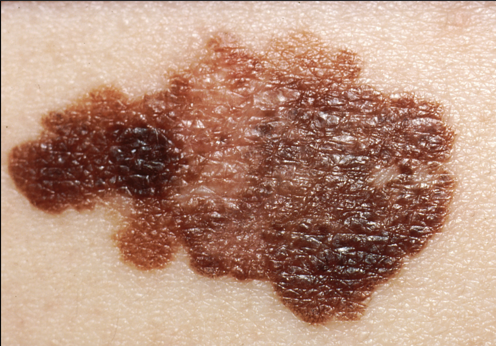
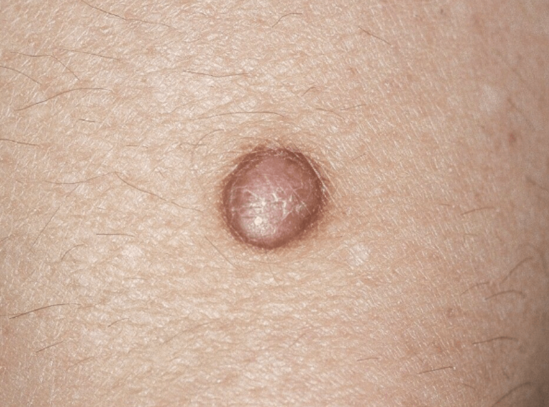

8 stratification classes

Melanoma
HighAggressive melanocytic malignancy requiring urgent evaluation.

Squamous Cell Carcinoma
HighCan metastasize if untreated.

Basal Cell Carcinoma
ModerateLocally invasive; rarely metastasizes.

Actinic Keratosis
ModeratePrecancerous UV-related lesion.

Benign Keratosis
LowNon-cancerous age-related growth.

Dermatofibroma
LowBenign fibrous nodule.

Vascular Lesion
LowBlood vessel anomalies.

Melanocytic Nevus
LowCommon mole — monitor for changes.
Clinical disclaimer: For education and preliminary screening only. Not FDA-approved. Does not replace histopathology or a board-certified dermatologist. Always seek qualified medical evaluation.